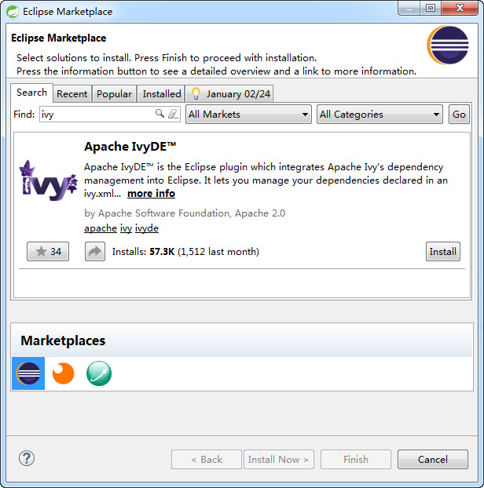
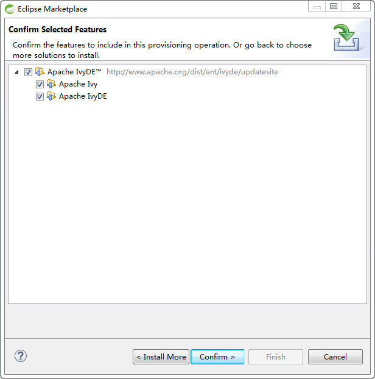
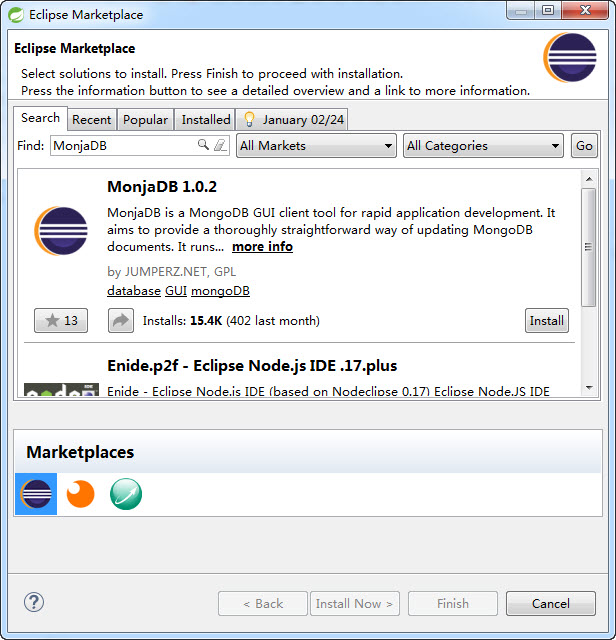
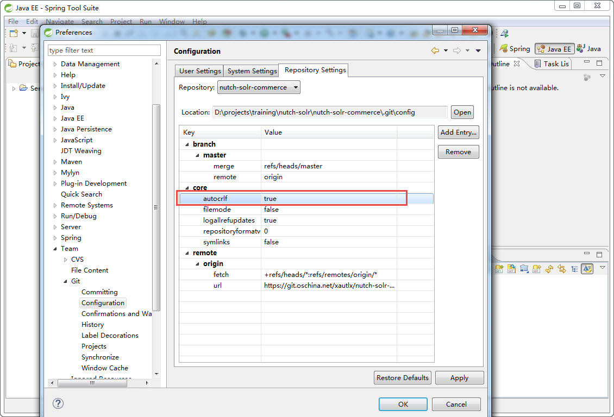

本教程文档原始基于Markdown编写，如果你熟悉Markdown文件及相关工具使用，可以直接通过Markdown阅读或编辑工具查看本教程.md格式文件。
由于Markdown语法暂时没有目录支持，如果希望以目录导航方式查看文档，可参考如下方式：在文档对应的.html格式文件上面右键选择“Open with Microsoft Office Word”或直接用Word打开此文件，开启“文档结构视图”功能，显示文档内容模式大致如下：
文档内容主要涉及基于 http://git.oschina.net/xautlx/nutch-ajax 项目内容（额外包含一些Nutch和Solr标准的功能和原理说明但不保证完整性）的设计和开发过程讲解。具体可详见文档目录列表。
常规的HTML页面抓取: 对于常规的例如新闻类没有AJAX特性的页面可以直接用Nutch自带的protocol-http插件抓取。
常规的AJAX页面抓取: 对于绝大部分诸如jQuery ajax加载的页面，可以直接用htmlunit扩展插件抓取。
特殊的AJAX请求页面抓取: 诸如淘宝/天猫的页面采用了独特的Kissy Javascript组件，目前测试htmlunit无法正确解析，因此退而求其次采用效率低一些的Selenium WebDriver方式实现页面数据抓取。
基于过滤链模式解析页面结构化数据: 解析提取页面结构化属性数据项，并内置SQL和No SQL等类型数据持久化接口处理。
基于Solr整合实现定制数据的索引和搜索支持: 扩展提供定制索引项，拼音转换，业务数据库整合等SOLR集成。
文档所列举到的工具软件类型及版本，操作过程等，皆以实际操作过程涉及相关为参考，如果你是新手建议一步步按照文档进行，如果你是熟手你可以参考相关描述直接在现有熟悉的环境自行配置。
Nutch的运行涉及Hadoop，HBase等这些组件，官方的代码和指南基本都是面向或优先定位在Unix/Linux环境进行开发和部署运行的。但是考虑到比较绝大部分开发人员都是熟悉Windows开发环境，考虑到引入Linux作为开发演示环境会把开发过程进一步复杂化，因此本教程全部基于Windows系统进行说明，并且会对其中涉及到一些平台问题进行特殊说明
除特殊说明以外，以下教程假定相关软件或项目的操作根目录为：DEV_DIR=D:\projects\training
内容不包括：
本教程内容以单机运行模式为例，不涉及Nutch及Solr相关的基于HDFS、Hadoop、HBase等分布式和集群部署运行等高级特性，此类相关技术点在本教程不做任何说明，请自行参考官方资料相关教程。
Nutch官方WIKI文档：http://wiki.apache.org/nutch/
Solr官方WIKI文档：https://wiki.apache.org/solr/
从Oracle官方下载JDK 7版本，本教程采用Windows 64位jdk1.7.0_45。具体Nutch 2.X系列支持JDK版本可参考Nutch官方说明。
本教程采用Windows 64位spring-tool-suite 3.6.3.RELEASE（以下简称STS），下载安装文件名为 spring-tool-suite-3.6.3.RELEASE-e4.4.1-win32-x86_64.zip。
具体可访问 http://spring.io/tools/sts/ 或 http://spring.io/tools/sts/legacy 下载STS最新版本或本教程对应版本。
下载压缩文件后，创建${DEV_DIR}\tools目录，并把zip文件直接拷贝到tools目录，然后点击右键解压缩工具（本教程使用7-zip工具）“解压缩到当前文件夹...”，得到本地${DEV_DIR}\tools\sts-bundle。
重要提示：建议不要采用直接双击打开压缩包然后拖放到目录的操作方式，这种操作很可能遇到抛出文件路径过程的错误。
Nutch 2.X系列采用Apache Gora作为底层数据存储，具体支持的组件和版本详见：http://nutch.apache.org/， 特别注意“SQL backend for Gora has been deprecated”，
虽然还有一定的遗留支持但是官方最新版本已经不推荐或存在一定版本兼容问题，因此就不在费劲尝试使用MySQL这样的关系数据库作为爬虫数据存储了。
另外，考虑到诸如Hadoop、HBase等这样Nutch主推的分布式存储方案，在Windows上面尝试搭建这样的环境那是相当麻烦。最后综合考虑，选择在Windows上面比较方便安装和使用的MongoDB作为数据存储。
目前最新版本3.X系列未做测试验证，本教程采用MongoDB 2.6.X系列版本，具体可访问 http://www.mongodb.org/downloads#previous 下载2.6.X系列最新版本。
安装使用详见官方指南：http://docs.mongodb.org/manual/tutorial/install-mongodb-on-windows/
启动STS，设定工作空间为D:\projects\training\nutch-solr\workspace，切换到Java EE视图。

STS默认取安装的jre，一般建议添加配置执行本地安装的jdk，如下图配置所示：

Nutch采用Ivy进行依赖管理，结合自带的ANT配置实现完整的Ivy构建过程。为了更方便的在STS环境进行开发Run或Debug运行，更好的方式是安装Apache IvyDE插件。
请参考以下截图通过Eclipse Marketplace方式安装IvyDE插件：

输入ivy关键词查询出现插件列表，并点击install，下一画面全选安装项目，然后一步步confirm和accept接受协议等finish安装：


等待STS自动下载安装插件，期间提示Security Warning点击OK确认，最后按照提示重启STS。
项目参数配置说明：
ivy默认的本地资源库路径为当前用户目录的.ivy2目录。为了避免路径差异化导致的问题，本项目统一将ivy的user.dir指向当前项目的ivy/repoistory目录。
如果你熟悉ivy的使用并且本地已有现成的本地库可以自行调整执行本地资源库减少不必要的重复下载。
为了直观和操作MongoDB NoSQL数据库的数据，选用安装Eclipse插件MonjaDB。具体安装过程同上述IvyDE插件类似的通过在Eclipse Marketplace搜索MonjaDB即可按指示完成插件安装。

Apache官方提供的源码是基于Linux平台的，放到Windows平台做了一些拷贝迁移之后出现了字符差异，详见 http://git-scm.com/book/en/v2/Customizing-Git-Git-Configuration 。
会导致资源库对比视图出现大量干扰信息，为了避免此问题需要设置GIT参数：
选择菜单Window-》Preferences，弹出界面如图添加git客户端参数core.autocrlf=true：


项目基于GIT进行代码托管，你可以基于熟悉的Eclipse Git插件或TortoiseGIT或其他GIT客户端工具等获取项目代码。以下基于STS已自带的git插件进行项目获取。
启动STS，菜单操作Window-》Show View-》Others，在弹出界面找到Git-》Git Repositories：

再显示的“Git Repositories”标签项，选择“Clone a Git Repository”，弹出界面选择“Clone URI”，

输入项目git资源库地址：https://git.oschina.net/xautlx/nutch-solr-commerce.git ，填写自己的git平台网站的账号和密码：
下一步选取所需的代码分支，默认master。一般master是项目主干最新代码，具体其他各分支用途详见后续说明。
下一步填写资源库的存储路径，本教程为：D:\projects\training\nutch-solr\nutch-solr-commerce

git插件clone下载整个工程目录后，在STS的Project Explorer鼠标右键点击“Import” -》“Import...”：


定位到：D:\projects\training\nutch-solr\nutch-solr-commerce\apache-nutch-2.3，选择项目，然后完成导入操作：

点击完成后，项目导入到工作空间，由于之前安装了Apache IvyDE插件，将自动触发Ivy资源下载到本地资源库。
整个下载过程涉及到整个Nutch项目所有依赖的jar组件，依据你的网速情况可能需要持续数分钟到数十分钟。

目前已知在网络不稳定情况可能会出现如下类似异常：
unresolved dependency: org.restlet.jse#org.restlet.ext.jaxrs;2.2.3: not found
unresolved dependency: org.restlet.jse#org.restlet.ext.jackson;2.2.3: not found
unresolved dependency: org.restlet.jse#org.restlet;2.2.3: not found
解决测试可行的方法：在工程的主目录build.xml文件右键选择Run AS-》ANT Build，正常情况应该会出现restlet相关及一系列其他所需组件下载信息，及自动化构建过程。

注意：在ivy ANT脚本执行过程中，有时会感觉卡住没有动静，例如Console一直显示 loading settings :: ...,这一般是正常情况，ANT是在默默的进行网络资源下载只是没有Debug显示相关的执行过程信息，只需要耐心等待一段时间。如果想确认ANT是在正常执行而不是没响应，介绍下面两种方式：


ANT执行最后可能构建失败提示信息，暂时不用理会。

ANT执行完毕后，如下图在Ivy构建依赖上面右键选择“Resolve”，将触发Apache IvyDE插件再次更新下载依赖jar组件，其中自动包括了关联的-source.jar和-javadoc.jar，可以方便后续的源码跟踪Debug调试。此过程依据你的网速情况可能需要持续数分钟到数十分钟。

最后为了加载各插件所需jar组件下载加载完成，再次在工程的主目录build.xml文件右键选择Run AS-》ANT Build，会调用执行ANT配置的runtime目标任务，等待一段时间执行完毕后，正常情况ANT将完成整个项目构建输出runtime运行目录，如下图所示：

等待上述构建路径处理后，整个项目应该能全部正常编译通过。
官方的教程一般都是基于Linux环境bin目录下脚本来运行Nutch，我们可以先大致看一下脚本源码理解一下bin目录下两个脚本：
进一步分析bin/crawl脚本源码可以看出，执行过程大致如下：
initial injection -》 main loop : rounds of generate - fetch - parse - update [ - index ]
转换为对应的Job过程为：
InjectorJob => GeneratorJob -> FetcherJob -> ParserJob -> DbUpdaterJob [ -> SolrIndexerJob ]
步骤1完成初始化后，步骤2-6则不断循环执行，不断进行深层次页面爬取解析。
项目默认配置问调用本地MongoDB作为gora底层存储，详见conf/gora.properties配置内容。因此需要本地安装默认端口启动MongoDB服务。具体各系统版本安装指南详见官方说明。以下以Windows MongoDB 2.6.X为列示意说明：
从MongoDB官方站点下载对应的安装文件msi或zip格式，安装或解压缩后，找到对应目录下创建目录data，然后参考如下创建启动脚本startup.bat（亦可按照官方资料创建windows服务方式运行）：
bin\mongod.exe --dbpath=.\data
直接运行上述命令或启动脚本，启动MongoDB服务。

为了便于查看和调整MongoDB数据，按照上述文档提到的安装配置MongoDB的Eclipse插件MonjaDB，打开对应View可以直观的看到nutch存储的运行过程数据。可以JSON形式查看各url对应的存储数据内容，也可以编辑或删除某些行项，尤其在有时需要清除数据，重新爬取采集时非常方便。在各Job运行过程可以观察各项数据变化了解nutch执行过程。

通过上述分析，在STS开发环境需要方便的进行开发调试，最好就是配置各Job独立Run/Debug。
项目提供了一系列预置好的配置文件，只需导入STS环境，即可快速的以开发模式一步步体验项目运行过程。
选择菜单File-》Import...,如下图选择：

定位到项目提供的配置文件目录：
D:/projects/training/nutch-solr/nutch-solr-commerce/apache-nutch-2.3/ide/launch
注意：导入完成后STS会自动把launch目录先相关文件删除！

完成导入后，在Run或Debug操作按钮点击"Run Configurations..."可以弹出界面的“Java Application”项下面能看到相关Job配置列表：


可以点击相关配置查看或修改配置参数，然后独立点击运行各Job即可（如Nutch第一个顺序执行Job：InjectorJob），运行过一次后，会直接出现在Run/Debug按钮下方直接点击运行或调试。
关于如何配置参数和了解有哪些可配置参数，以下以InjectorJob为列说明：


具体各Job有哪些参数，有几种途径得到：
按照上述配置执行InjectorJob，如果出现如下类似异常。此问题是由于在Windows环境执行hadoop文件系统的权限问题导致，具体可搜索引擎查询关键词了解“windows hadoop Failed to set permissions of path”：

请在apache-nutch-2.3项目右键选择“Properties”弹出属性配置界面，如下图把hadoop-core配置类加载顺序，优先加载工程的lib目录下hadoop-core-1.2.0.jar组件，是基于网上提供的修改源码屏蔽权限检查二次封装的jar。注意基本要求是：排在conf之后，Ivy之前

再次执行InjectorJob应该能在console看到job执行过程到success
对于Htmlunit组件无法解析的页面（目前已知有淘宝taobao和天猫tmall商品详情页面），protocol-s2jh组件会尝试进一步采用Selenium WebDriver模拟获取解析页面，目前实现采用FirefoxDriver执行，因此需要在操作系统事先安装最新版本FireFox浏览器，否则无法正确执行。
具体代码在apache-nutch-2.3\src\plugin\protocol-s2jh\src\java\org\apache\nutch\protocol\s2jh\HttpResponse.java中的readPlainContentByWebDriver方法内，可以自行调整代码改用IE或Chrome等浏览器支持。
在执行Fetch或Parse过程，涉及到解析数据输出存储。项目做了一定扩展实现解析数据持久化处理，详见nutch-site.xml中parse.data.persist.mode定义及相关参数定义。
教程以MySQL作为持久化目标为例说明：
在本地下载安装MySQL数据库，并默认端口启动运行。
创建UTF-8字符集的nutch数据库，并执行表初始化脚本，参考DDL：
CREATE DATABASE nutch DEFAULT CHARACTER SET utf8 COLLATE utf8_general_ci;
CREATE TABLE `crawl_data` (
`url` varchar(255) NOT NULL,
`code` varchar(255) NOT NULL,
`name` varchar(255) DEFAULT NULL,
`category` varchar(255) DEFAULT NULL,
`order_index` int(255) DEFAULT NULL,
`fetch_time` datetime NOT NULL,
`text_value` text,
`html_value` text,
`date_value` datetime DEFAULT NULL,
`num_value` decimal(18,2) DEFAULT NULL
) ENGINE=InnoDB DEFAULT CHARSET=utf8;
按照root或自建用户的名称和密码，修改设置nutch-site.xml中jdbc相关参数：
按流程运行到ParserJob之后，使用自己熟悉的MySQL数据库客户端查看相关数据即可：
为了适应不同项目对不同感兴趣属性的解析存储，数据存储结构采用纵向的属性列表方式，即一个url页面多个属性存储多条记录方式，并且按照text，html，data，num几大典型类型分别对应存储。
为了一般在业务系统获取同一个url的多个属性或友好查询显示，参考如下MySQL脚本实现把纵向的属性列表属性转换为横向的多列显示模式：
SELECT url ,fetch_time,
GROUP_CONCAT(CASE WHEN code = 'domain' THEN text_value ELSE null END) AS `domain`,
GROUP_CONCAT(CASE WHEN code = 'name' THEN text_value ELSE null END) AS `name`,
GROUP_CONCAT(CASE WHEN code = 'brand' THEN text_value ELSE null END) AS `brand`,
GROUP_CONCAT(CASE WHEN code = 'category' THEN text_value ELSE null END) AS `category`,
GROUP_CONCAT(CASE WHEN code = 'purpose' THEN text_value ELSE null END) AS `purpose`,
GROUP_CONCAT(CASE WHEN code = 'price' THEN num_value ELSE null END) AS `price`,
GROUP_CONCAT(CASE WHEN code = 'refPrice' THEN num_value ELSE null END) AS `refPrice`,
GROUP_CONCAT(CASE WHEN code = 'primaryImage' THEN text_value ELSE null END) AS `primaryImage`
FROM crawl_data GROUP BY url,fetch_time

运行FetcherJob（如果nutch-site.xml中fetcher.parse参数配置为true）或ParserJob，则可以观察到MySQL数据内容的变化。
教程基于Solr 4.8.1作为索引搜索功能，由于solr本身下载文件较大，因此不在git中提供完成版本，只提供项目主要用到的example配置文件，具体配置运行过程如下：
执行项目目录下的nutch-solr-commerce\solr-4.8.1\example\startup.bat，启动运行solr服务，默认为基于jetty启动8983 HTTP服务：

浏览器访问 http://localhost:8983/solr/ ，显示如下界面说明启动运行正常：

如上图左侧下拉列表选择collection1，显示对应core的管理配置界面：

运行IndexingJob会执行索引内容处理以及调用solr写入索引数据过程：
特别注意：目前已知在nutch-site.xml的plugin.includes配置如果value值换行（比如对xml文件进行格式化处理导致），可能导致不能正常识别indexer-solr配置导致抛出异常信息：No IndexWriters activated - check your configuration ，遇到此问题请尝试如上图标识手工删除换行执行试试。
运行DbUpdaterJob和SolrIndexerJob后，则可以观察到Solr索引数据内容的变化。具体可以访问 http://localhost:8983/solr/#/collection1/query 查询内容：

lib-pinyin: 用于parse或index插件转换中文到拼音提交solr；部署用于solr dataimporthandler组件进行拼音转换的transformer扩展插件
lib-htmlunit: 基于Htmlunit的多线程处理，缓存控制，请求正则控制等特性扩展插件
protocol-s2jh: 基于Htmlunit和Selenium WebDriver实现的AJAX页面Fetcher插件
parse-s2jh: 基于XPath解析页面元素内容; 持久化解析到的结构化数据，如MySQL，MongoDB等; 对于个别复杂类型AJAX页面定制判断页面加载完成的回调判断逻辑
index-s2jh: 追加设置需要额外传递给SOLR索引的属性数据; 设定不需要索引的页面规则;
以下对各插件进一步做功能和设计实现讲解：
基于Pinyin4J组件封装实现一个汉字转拼音的Convertor帮助类用于在index插件中进行拼音属性输出，以及一个定制Solr的dataimport的Transformer插件用于在从数据库提取数据转换导入拼音索引内容。
用法场景：一般在搜索引擎或电商商品搜索等功能界面，为了用户友好体验，一般会提供一个基于拼音首字母进行AutoSuggest提示效果，可通过此组件把相关的中文属性转换写入一个额外用于索引搜索的拼音属性。

在solr-4.8.1\example\solr\collection1\conf\schema.xml中添加对应属性定义，注意设置multiValued="true"，因为存在多音字处理一段汉字转换出来可能形成多组拼音组合：
<field name="pinyin" type="string" stored="true" indexed="true" multiValued="true"/>
关于Solr Auto Suggest效果后面有专门章节进一步讲解相关处理要点。
项目提供两种典型的用法参考：
在IndexingFilter中操作NutchDocument对象添加写入拼音属性，可参考S2jhIndexingFilter实现：
Set<String> pinyins = ChineseToPinyinConvertor.toPinyin(TableUtil.toString(page.getTitle()),
ChineseToPinyinConvertor.MODE.capital);
for (String pinyin : pinyins) {
doc.add("pinyin", pinyin);
}
提取数据库name字段值转换添加写入pinyin属性值：
<dataConfig>
<document name="doc">
<entity name="item" transformer="solr.ChineseToPinyinTransformer"
query="select name from product">
<field column="name" toPinyin="pinyin" mode="both"/>
</entity>
</document>
</dataConfig>
通过一些网站测试和Htmlunit源码分析，添加对于Cache-Control=max-age此类响应头信息的缓存处理，避免不必要的重复数据下载提高爬取效率。
Htmlunit获取解析页面时，默认机制是发起所有相关的Page，JS或CSS(如果开启的话)请求，对于一些庞大的页面可能动辄好几十个请求，但是其中绝大部分请求对于运行解析数据没有实际作用，尤其是一些三方的统计跟踪等请求。RegexHttpWebConnection扩展标准的HttpWebConnection，参考Nutch标准的regex-urlfilter.txt对应处理机制，在conf目录下定义了一个htmlunit-urlfilter.txt文件，在此文件中类似采用加减号正则表达式规则定义exclude一些不必要的htmlunit内部请求url。
htmlunit-urlfilter.txt基本配置过程：
默认不做任何配置执行页面FetcherJob任务，可以看到类似的日志信息：
Htmlunit fetching: http://www.jumeiglobal.com/deal/ht150312p1316688t1.html
Initing web client for thread: 23
Thread: Thread[FetcherThread2,5,main], + Http Fetching URL: http://www.jumeiglobal.com/deal/ht150312p1316688t1.html
Thread: Thread[FetcherThread0,5,main], + Http Fetching URL: http://s0.jmstatic.com/templates/jumei/js/??/jquery/jquery-1.4.2.min.js,/v44.3/jquery.all_plugins_v1.min.js,/v44.3/Jumei.Core.min.js?V0
Thread: Thread[FetcherThread2,5,main], + Http Fetching URL: http://a0.jmstatic.com/4cc7ce36d221af7f/lib.js
Thread: Thread[FetcherThread2,5,main], + Http Fetching URL: http://a0.global.jmstatic.com/7f72d7e452b1b718/ui.js
Thread: Thread[FetcherThread2,5,main], + Http Fetching URL: http://a2.global.jmstatic.com/77dc800b4e0f6eee/app.js
Thread: Thread[FetcherThread2,5,main], + Http Fetching URL: http://a3.global.jmstatic.com/0e57821a8e24b03b/detail_main.js
Thread: Thread[FetcherThread0,5,main], + Http Fetching URL: http://s0.jmstatic.com/templates/jumei/js/carousel.basic.js
Thread: Thread[FetcherThread0,5,main], + Http Fetching URL: http://s0.jmstatic.com/templates/jumei/js/lib/sea.js?v2.3
Thread: Thread[FetcherThread0,5,main], + Http Fetching URL: http://s0.jmstatic.com/templates/jumei/js/v44.3/ibar.min.js?V0
Thread: Thread[FetcherThread0,5,main], + Http Fetching URL: http://s0.jmstatic.com/templates/jumei/js/v44.3/Jumei.Search.min.js?V0
Thread: Thread[FetcherThread2,5,main], + Http Fetching URL: http://click.srv.jumei.com:80/global_mc.php?da7D&callback=jQuery111207272193275877097_1427164245878&_=1427164245879
Thread: Thread[FetcherThread0,5,main], + Http Fetching URL: http://s0.jmstatic.com/templates/jumei/js/jquery/dc.js
Thread: Thread[FetcherThread2,5,main], + Http Fetching URL: http://www.jumei.com/i/api/webinit?callback=jQuery111207272193275877097_1427164245880&_=1427164245881
Thread: Thread[FetcherThread2,5,main], + Http Fetching URL: http://cart.jumei.com/i/ajax/get_cart_data/?callback=jQuery111207272193275877097_1427164245882&_ajax_=1&which_cart=all&_=1427164245883
Thread: Thread[FetcherThread2,5,main], + Http Fetching URL: http://v3.jiathis.com/code/jia.js?uid=1405939063755704
Thread: Thread[FetcherThread0,5,main], + Http Fetching URL: http://www.google-analytics.com/__u
Thread: Thread[FetcherThread0,5,main], - Http Fetching URL: http://hm.baidu.com/h.js?884477732c15fb2f2416fb892282394b
Thread: Thread[FetcherThread0,5,main], + Http Fetching URL: http://cpro.baidu.com/cpro/ui/rt.js
Thread: Thread[FetcherThread0,5,main], + Http Fetching URL: http://s0.jmstatic.com/templates/jumei/js/v44.3/Jumei.ClickMap.min.js?V0
Thread: Thread[FetcherThread2,5,main], + Http Fetching URL: http://v3.jiathis.com/code/jiathis_utility.html
Thread: Thread[FetcherThread2,5,main], + Http Fetching URL: http://tajs.qq.com/jiathis.php?uid=1405939063755704&dm=www.jumeiglobal.com
Thread: Thread[FetcherThread2,5,main], + Http Fetching URL: http://click.srv.jumei.com:80/global_f
Thread: Thread[FetcherThread2,5,main], + Http Fetching URL: http://p0.jmstatic.com/product_report/newKoubei/js/js/12/Ajaxpage.js?_=1427164245886
Thread: Thread[FetcherThread2,5,main], + Http Fetching URL: http://koubei.jumei.com/ajax/reports_for_deal_newpage.json?init=1&product_id=1316688&callback=jQuery111207272193275877097_1427164245884&_=1427164245887
Thread: Thread[FetcherThread2,5,main], + Http Fetching URL: http://s0.jmstatic.com/templates/jumei/js/jquery/dc.js
Thread: Thread[FetcherThread0,5,main], + Http Fetching URL: http://search.jumei.com/ajax_get_default_word?callback=jsonp1427164246064
Thread: Thread[FetcherThread2,5,main], + Http Fetching URL: http://www.google-analytics.com/__utm.gif?2Fht150312p1316688t1.html&utmht=1427164248572&utmac=UA-51447284-1
Thread: Thread[FetcherThread2,5,main], - Http Excluding URL: http://hm.baidu.com/h.js?202f3ad244bdee87bc472ca5481a9267
分析上述一系列请求，初步排除一些明星无关的请求，如ttp://cpro.baidu.com，ttp://www.google-analytics.com等这些，添加到htmlunit-urlfilter.txt
-^http://www.google-analytics.com
-^http://cpro.baidu.com
然后再次运行FetcherJob，可以看到相关请求已经变成Excluding：
Thread: Thread[FetcherThread4,5,main], - Http Excluding URL: http://cpro.baidu.com/cpro/ui/rt.js
Thread: Thread[FetcherThread0,5,main], - Http Excluding URL: http://www.google-analytics.com/__utm.gif?utmwv=5.4.9&utms=1&utmn=4168
然后在进一步尝试把“感觉无用的”URL请求添加到htmlunit-urlfilter.txt排除列表中，一步步减少不必要的HTTP请求。这个过程要注意随时观察parse组件解析出来的数据是否齐备，如果在排除过程中发现由于添加了某些url排除导致解析不到数据了，说明这个url地址是用于需要的数据解析执行的就恢复保留。通过这样尝试迭代的方式不断完善过滤配制规则，例如：
-^http://www.google-analytics.com
-^http://cpro.baidu.com
-^http://search.jumei.com/ajax_get_default_word
-^http://click.srv.jumei.com
-^http://www.jumei.com/serverinfo.php
-^http://cart.jumei.com/i/ajax/get_cart_data
-^http://www.jumei.com/i/ajax/get_view_history
-^http://www.jumei.com/i/ajax/get_recommend_by_history
-^http://www.jumei.com/i/ajax/get_keyword_pro
-^http://eclick.baidu.com
Htmlunit过滤配置原则:
上述过程可能感觉有点繁琐，至于做到什么程度主要取决于对爬取效率的要求，如果不太在意爬取页面的速度快慢，可以完全忽略此项配置按照htmlunit默认机制发起所有http请求；如果希望提高页面获取速度，那就可以尝试尽可能的排除不必要的url请求，可以大幅提高页面爬取和解析速度。
Nutch的运行基于多线程模式，HttpWebClient提供Htmlunit Page请求接口封装，其中实现每个线程一个WebClient运行模式，从而最大程度利用Htmlunit每个WebClient对重复URL请求的Cache处理特性，对于大批量相似页面的获取可以大幅减少重复URL请求耗时。
通过仔细观察Htmlunit运行日志，可以看出运行初期请求的URL数量会比较多，当所有线程的WebClient都运行一段时间后，不少不同页面的相同URL请求会被缓存使用，JS请求的数量会逐步减少到一个稳定状态。因此，如果比较关注页面爬取或解析效率参数，建议在运行一段时间稳定之后再观察相关的平均参数信息。
基于Nuthc标准的protocol-http组件源码基础上，添加Htmlunit，Selenium WebDriver方式爬取页面:
上述过程主要一个判断就是组件获取的HTML内容是否已包含后续parse组件所需内容，基本思路是遍历所有自定义的ParseFilter组件，根据每个匹配的过滤器组件内部定义的解析内容判定接口方法，直到所有匹配的过滤器组件返回确认所需数据都已满足则标识爬取成功返回，如果到最后超时都没有获取所需数据则抛出异常。具体实现可参考HttpResponse中的isParseDataFetchLoaded及关联调用的ParseFilter组件的对应方法。
注意：如果需要支持Selenium WebDriver运行模式，一般建议在Desktop类型操作系统部署，需要在操作系统层面确保已安装相关的WebDriver浏览器程序，尤其对于Linux Server一般都是以headless行模式启动运行的需要另行安装相关软件和配置，具体请参考Selenium官方网站相关指南或网上搜索Selenium Headless Linux等关键词。
Nutch自带一些如parse-html，parse-meta等解析插件，主要用于解析一些通用的HTML属性值，如title，meta，charset，text，links等。对于定向采集需求，一般需要再进一步提取解析页面特定元素内容，如商品价格，商品描述，新闻发布时间，新闻摘要等信息。同时，采集到这些数据后，一般都会持久化到自己特定业务系统数据库中使用，如商品信息显示，新闻发布等。
本插件提供一系列数据项解析和定制持久化的处理封装，具体接口方法详见代码注释和实现：
Nutch的索引处理，除了自家的Solr以外，还提供了Elastic支持可参考官方资料。本教程以Solr为例。Nutch自带一些如index-basic，index-meta等索引处理插件，主要用于提取一些通用的页面属性添加到对应的solr索引属性。
本插件提供结合parse插件组合控制只有业务相关的URL才进行索引，其余业务无关仅用于连接分析的页面忽略；取上述parse定制过滤器写入MetaData的索引属性写入处理。
以下对项目中特定用到的配置文件进行简要介绍，具体配置规则细节或其他未提及的配置文件，请参考Nutch官方WIKI资料。
项目定制的Nutch配置主文件，基本规则是参考缺省的nutch-default.xml，在nutch-site.xml定义特定的参数值覆盖默认值或新增扩展插件特定的属性值。
以下对个别Nutch标准的重要参数说明：
以下对主要自定义插件相关参数说明：
在上述nutch-site.xml配置了storage.data.store.class参数后，需要对应修改配置gora.properties文件。文件中已经给出了不同datastore类型的参数示意，只需根据需要把相关参数取消注释及设定合理值即可。以下是项目基于MongoDB的配置示例：
gora.datastore.default=org.apache.gora.mongodb.store.MongoStore
gora.mongodb.override_hadoop_configuration=false
gora.mongodb.mapping.file=/gora-mongodb-mapping.xml
gora.mongodb.servers=localhost:27017
gora.mongodb.db=nutch
#gora.mongodb.login=login
#gora.mongodb.secret=secret
用途：用于InjectorJob及GeneratorJob等过程注入或新引入的URL列表进行判断检测是否作为有效的URL纳入Nutch下一步的处理清单中。
Nutch提供一系列处理URL过滤的插件，列如prefix-urlfilter.txt和suffix-urlfilter.txt分别用于URL前缀和后缀过滤控制，其余还有domain-urlfilter.txt，automaton-urlfilter.txt等，基本都是从不同维度不同角度去进行检测控制。如果需要上述urlfilter起作用，除了合理配置这些文件中的过滤参数以外，需要注意修改nutch-site.xml的plugin.includes中添加相应的插件引入。具体支持的列表可以直接通过src/plugin下urlfilter前缀的插件列表：

项目中使用的是比较灵活的基于正则表达式的regex-urlfilter，其主要配置文件为regex-urlfilter.txt，主要语法就是基于
“+”加号前缀表示include对应正则表达式URL，“-”减号前缀表示exclude对应正则表达式URL。一般采用正向白名单方式，配置一系列加号规则明确只包含特定URL；还有种方式反向黑名单方式，在前面配置一系列减号排除的URL集合，在最后配置一个加号包含所有URL规则，用于表示除了上述排除URL以外其余都是有效URL。
提示建议：如果Nutch运行过程，发现一些需要的URL被过滤掉而没有被处理，请注意检查regex-urlfilter.txt中正则配置表达式。关于如何编写正则或遇到分析问题比较好的方式是找一款或网上搜索“正则表达式测试工具”，把自己配置的正则表达式和预期需要的URL进行比对判断，在测试工具中反复尝试编写和验证以找到有效的正则表达式。

尽量合理高效的配置urlfilter，可以有效的减少不必要的URL页面纳入到Nutch的爬虫队列从而提高定向的页面爬取和采集效率。以爬取解析苹果天猫点商品详情为例，一般的分析过程是：
用途：用于在运行过程中涉及到的URL进行清洗归一化处理。通俗的说站点页面生成的链接数据，可能存在一些随机标识信息或无关紧要的参数信息，比如说标识不通来源的信息，不通搜索条件下的信息等等，举例如典型的淘宝商品详情链接：http://detail.tmall.com/item.htm?spm=a1z10.4-b.w5003-5366045755.6.aLdfxv&id=41572748070&scene=taobao_shop ，这个spm参数可能根据不同条件在变化，这样每次运行Nutch对于同一个商品可能得到不同URL地址添加到爬虫队列，但是实际这个商品之前已经处理过。就可以利用normalize插件把这些不同内容但是相同含义的URL清洗归一化处理，例如：
<!-- jumei.com -->
<!--
http://sh.jumei.com/i/deal/d150309p1818zc.html?from=sr__4_7
->
http://sh.jumei.com/i/deal/d150309p1818zc.html
-->
<regex>
<pattern>\?from=sr__.*</pattern>
<substitution></substitution>
</regex>
<!-- tmall.com -->
<!--
http://detail.tmall.com/item.htm?spm=a1z10.4-b.w5003-5366045755.6.aLdfxv&id=41572748070&scene=taobao_shop
->
http://detail.tmall.com/item.htm?id=41572748070&scene=taobao_shop
-->
<regex>
<pattern>spm=.*&</pattern>
<substitution></substitution>
</regex>
通过上述处理后的URL，看着既干净整洁了，同时也避免了大量重复不必要的URL处理。
此类插件也需要在nutch-site.xml的plugin.includes中添加相应的插件引入。具体支持的列表可以直接通过src/plugin下normalize前缀的插件列表。
此配置文件是定制的protocol-s2jh基于Htmlunit获取页面时所需优化的过滤配置，详见前面“RegexHttpWebConnection：基于正则的URL请求过滤控制”章节说明。
标准的log4j日志配置文件，在开发调试过程可以调整以便查看更多运行过程明细日志，生产环境设置较高级别避免性能影响。
本教程基于Solr 4.8.X系列，直接在官方提供的solr完整下载包基础上定制化修改本项目功能特性。具体安装运行说明详见前面章节“Solr运行及索引”。
本项目中主要涉及到配置文件说明如下：
统一说明：以下配置文件所在上级目录为“solr-4.8.1\example\solr\collection1\”。
Solr3.X系列时主要使用IKAnalyzer中文分词组件，网上提到基于2012年发布的IKAnalyzer V2012_FF版本，按照默认配置虽然能成功但是发现没法定制添加特定的Filter，可能还是版本太旧对应最新版本支持有问题。项目采用了Solr自带扩展包的中文分词组件，虽然效果和之前试用的中文组件有所差异但是基本够用。
基本的配置参考：
在conf\solrconfig.xml中添加中文分词jar引入：
<lib dir="../../../contrib/analysis-extras/lucene-libs" regex="lucene-analyzers-smartcn-.*\.jar" />
在conf\schema.xml中添加类型定义：
<!-- 基本的中文分词类型 -->
<fieldType name="text_cn" class="solr.TextField"
positionIncrementGap="100">
<analyzer>
<tokenizer class="solr.SmartChineseSentenceTokenizerFactory" />
<filter class="solr.SmartChineseWordTokenFilterFactory" />
</analyzer>
</fieldType>
对于特定属性添加中文类型定义：
<field name="name" type="text_cn" stored="true" indexed="true" />
定义好分词类型和字段后，在配置初期或在遇到搜索词汇查询不到的情况下，可以充分利用Solr管理端提供的Analysis组件调试分词配置。
左侧为index索引分词结果，右侧为query查询分词结果，选择需要分析的字段名称或类型，下方会各自列出通过每一步tokenizer和filter后得到的分词结果，并会把query匹配分词高亮显示。如果调试发现index和query没有匹配项，那做select查询自然得不到结果，就需要进一步分析调整分词或过滤器定义。

关于拼音处理相关参考文档前部分“lib-pinyin：汉字转拼音组件”章节说明，其中已经涉及到如何进行拼音属性的处理做了说明。进一步配置说明：
例如“苹果手机”，中文分词组件会切分出“苹果”和“手机”两个词，这样的切分结果已符合绝大部分需求场景，用户输入“苹果”会建议提示“苹果手机”，但是也许业务可能会提出更高所谓的友好提示要求：输入“苹”就需要提示出“苹果手机”，那就可以利用EdgeNGramFilterFactory，把词汇进行进一步切分。在conf\schema.xml中添加中文分词扩展明细类型定义：
<!-- 在标准的中文分词基础上追加EdgeNGram处理，实现对一些简短属性的单字及多字随意查询支持 -->
<fieldType name="text_cn_detail" class="solr.TextField">
<analyzer type="index">
<tokenizer class="solr.SmartChineseSentenceTokenizerFactory" />
<filter class="solr.SmartChineseWordTokenFilterFactory" />
<filter class="solr.LowerCaseFilterFactory" />
<filter class="solr.EdgeNGramFilterFactory" minGramSize="1"
maxGramSize="5" side="front" />
</analyzer>
<analyzer type="query">
<tokenizer class="solr.SmartChineseSentenceTokenizerFactory" />
<filter class="solr.SmartChineseWordTokenFilterFactory" />
<filter class="solr.LowerCaseFilterFactory" />
</analyzer>
</fieldType>

<!-- auto suggest字段定义为细化单字的类型 -->
<field name="suggest" type="text_cn_detail" indexed="true" stored="false" multiValued="true" />
<!-- 把所有需要提供auto suggest效果的属性追加到suggest字段 -->
<copyField source="name" dest="suggest" />
<copyField source="pinyin" dest="suggest" />
最早的Solr版本有个SpellChecker拼写检查的概念，然后在此基础上定制化一些配置可以实现通常意义的Suggester效果。包括现在网上大量能搜索到相关资料都是基于SpellChecker来实现Auto Suggest的。最新版本的Solr扩展新增一个solr.SuggestComponent组件，具体示例配置可参考conf/solrconfig.xml中有一段基于solr.SuggestComponent和/suggest的配置，可参考官方说明：https://issues.apache.org/jira/browse/SOLR-5378
本项目也尝试用新的solr.SuggestComponent方式来实现输入提示需求，按照示例配置基本可以实现，但是发现一些限制，尤其是需要支持同时输入汉字和拼音都能提示没找到方法实现，在solr.SuggestComponent的field如果引用的是一个multiValued类型字段，组件只是基于第一个元素进行匹配搜索，对copyField组合的后续拼音内容完全无视了。
因此，最后本项目还是退回以前项目经验的一种做法，直接以标准的solr.SearchHandler方式实现，具体参考conf/solrconfig.xml中配置：
<requestHandler name="/s" class="solr.SearchHandler">
<lst name="defaults">
<str name="echoParams">NONE</str>
<int name="rows">10</int>
<str name="qf">suggest</str>
<str name="sort">name asc</str>
<str name="defType">edismax</str>
<str name="q.alt">*:*</str>
<str name="fl">*,score</str>
</lst>
</requestHandler>
通过上述配置，可以基本实现通过商品名称及对应拼音首字母，并且支持单字，匹配提示建议。而且返回的是完整行项数据，前端界面可以自由组合输出复杂展示界面效果。例如调用接口：http://localhost:8983/solr/collection1/s?q=kzl 或 http://localhost:8983/solr/collection1/s?q=卡， 返回如下图效果数据：


Solr的DataImport Handler（以下简称DIH）功能一般可以单独来使用，实现在没有Nutch数据来源的情况下，直接从自己业务系统不同数据源获取数据导入solr的索引和提供搜索功能。最典型的比如说自己有个电商网站，然后在自己的数据库管理系统编辑管理商品资料信息，然后需要把这些数据引入solr提供商品搜索功能。
官方指南可参考：https://wiki.apache.org/solr/DataImportHandler ，在官方下载的solr资料solr-4.8.1\example\example-DIH提供了一系列从不同数据源导入索引数据的演示配置。
以从业务数据库系统数据导入为例，再加上Nutch采集入库整合起来应用，可以分成如下几种场景：
应该说最后场景涵盖了前面几种场景，因此本教程以第4种场景给予实现说明，其他几种用法在此基础上裁剪即可。
首先在conf/solrconfig.xml文件中添加DataImport组件配置：
<lib dir="../../../dist/" regex="solr-dataimporthandler-.*\.jar" />
<requestHandler name="/dataimport" class="solr.DataImportHandler">
<lst name="defaults">
<str name="config">db-data-config.xml</str>
</lst>
</requestHandler>
然后再进一步看conf/db-data-config.xml配置文件，示例配置如下：
<!--
CREATE TABLE `domain_groups` (
`domain` varchar(128) NOT NULL,
`group_code` varchar(128) NOT NULL
) ENGINE=InnoDB DEFAULT CHARSET=utf8;
-->
<dataConfig>
<dataSource driver="com.mysql.jdbc.Driver" url="jdbc:mysql://localhost:3306/nutch?useUnicode=true&characterEncoding=UTF-8"
user="root" />
<script><![CDATA[
var atomicTransformer = function (row) {
var setMap = new java.util.HashMap();
setMap.put('set',row.get('update_time'));
row.put('groupUpdatetime',setMap);
return row;
};
]]>
</script>
<document>
<entity name="item" transformer="script:atomicTransformer,org.apache.solr.transformer.ChineseToPinyinTransformer"
query="SELECT url as id ,
GROUP_CONCAT(CASE WHEN code = 'domain' THEN text_value ELSE null END) AS `domain`,
GROUP_CONCAT(CASE WHEN code = 'name' THEN text_value ELSE null END) AS `name`,
GROUP_CONCAT(CASE WHEN code = 'brand' THEN text_value ELSE null END) AS `brand`,
GROUP_CONCAT(CASE WHEN code = 'category' THEN text_value ELSE null END) AS `category`,
GROUP_CONCAT(CASE WHEN code = 'purpose' THEN text_value ELSE null END) AS `purpose`,
GROUP_CONCAT(CASE WHEN code = 'price' THEN num_value ELSE null END) AS `price`,
GROUP_CONCAT(CASE WHEN code = 'refPrice' THEN num_value ELSE null END) AS `refPrice`,
GROUP_CONCAT(CASE WHEN code = 'primaryImage' THEN text_value ELSE null END) AS `primaryImage`
FROM crawl_data GROUP BY url"
deltaImportQuery="select t.*,g.update_time from (SELECT url as id ,
GROUP_CONCAT(CASE WHEN code = 'domain' THEN text_value ELSE null END) AS `domain`,
GROUP_CONCAT(CASE WHEN code = 'name' THEN text_value ELSE null END) AS `name`,
GROUP_CONCAT(CASE WHEN code = 'brand' THEN text_value ELSE null END) AS `brand`,
GROUP_CONCAT(CASE WHEN code = 'category' THEN text_value ELSE null END) AS `category`,
GROUP_CONCAT(CASE WHEN code = 'purpose' THEN text_value ELSE null END) AS `purpose`,
GROUP_CONCAT(CASE WHEN code = 'price' THEN num_value ELSE null END) AS `price`,
GROUP_CONCAT(CASE WHEN code = 'refPrice' THEN num_value ELSE null END) AS `refPrice`,
GROUP_CONCAT(CASE WHEN code = 'primaryImage' THEN text_value ELSE null END) AS `primaryImage`
FROM crawl_data GROUP BY url) t, domain_groups g where t.domain=g.domain and t.id='${dih.delta.id}'"
deltaQuery="select DISTINCT t.url as id from (SELECT url ,
GROUP_CONCAT(CASE WHEN code = 'domain' THEN text_value ELSE null END) AS `domain`
FROM crawl_data GROUP BY url) t, domain_groups g
where t.domain=g.domain and g.update_time > '${dataimporter.last_index_time}'">
<field column="name" toPinyin="pinyin" mode="capital"/>
<entity name="group" query="select group_code from domain_groups where domain='${item.domain}'">
<field name="groups" column="group_code" />
</entity>
</entity>
</document>
</dataConfig>
上述配置模拟的场景说明：用Nutch采集到一系列商品数据，写入业务数据库（SQL语法以MySQL为例，其他类型数据库需要对应调整语法）的crawl_data表，外部业务系统有个表domain_groups，两个表直接基于domain字段进行关联。一方面nutch在不断采集新数据到crawl_data，一方面业务系统在随时调整domain_groups配置数据，在业务系统变更domain_groups配置数据后能触发Solr及时更新索引。
一种是直接写JDBC连接参数方式：
<dataSource driver="com.mysql.jdbc.Driver" url="jdbc:mysql://localhost:3306/nutch" user="root" />
另一种是常用的JNDI连接参数方式：
<dataSource jndiName="java:comp/env/jdbc/nutch" type="JdbcDataSource" user="" password="" />
DIH组件提供transformer概念支持数据的格式转换处理，详见文档：https://wiki.apache.org/solr/DataImportHandler#Transformer
本教程提供了两个用法示例：
DIH组件主要有full-import和delta-import两个功能命令，详见官方说明： https://wiki.apache.org/solr/DataImportHandler#Commands ，与之对应的几个关键SQL属性含义说明如下：
配置完成后，可通过Solr Admin管理端访问如下Dataimport进行开发调试测试：

左侧下拉框分别可以选取full-import和delta-import，一般先调试通过full-import后，再调试delta-import。点击执行命令，如果抛出异常信息，根据异常提示信息在开发工具内修改db-data-config.xml，然后再dataimport管理界面点击右侧的“Reload”按钮重新加载配置，再次执行相应的full-import或delta-import命令，直到没有抛出异常Console提示相关Document操作成功，然后再点击Solr管理界面的Query功能查询数据是否正确导入。如此反复直到full-import和delta-import都按照预期运行正常。

调试技巧：有些属性可能在schema.xml中定义为stored="false"，则在Query查询界面不会直接显示内容，在调试开发过程可以临时设置为stored="true"方便于反复调试时只管的看到DIH导入数据内容。在全部调试完成后在按照实际需要改回stored="false"即可。